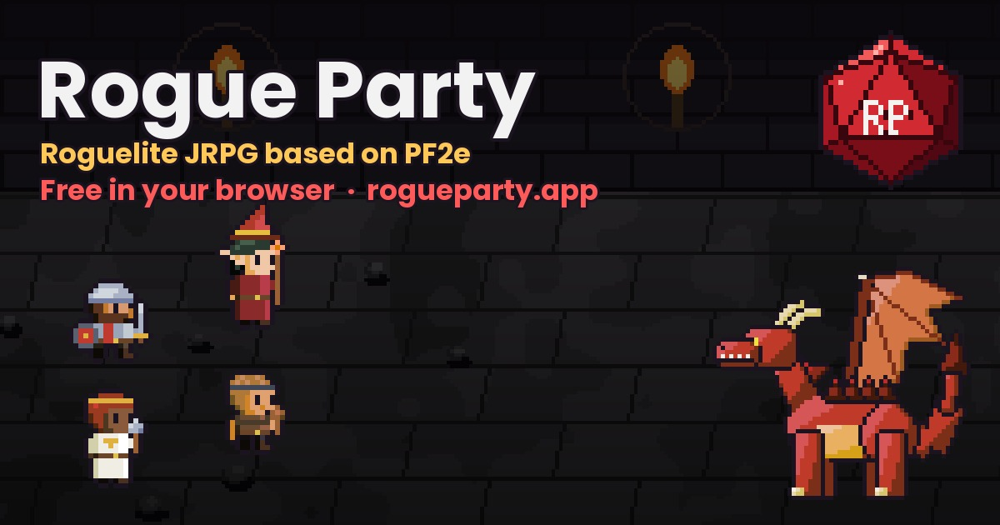

What is Rogue Party?
Rogue Party is a turn-based roguelite JRPG based on PF2e. You put together a party of four heroes, then fight your way up a map of ten floors: battles, traps, skill challenges and, at the top, a boss. Beat the boss and a new act begins. Fall, and the run is over, but every run teaches you something new.
It is a free browser game: there's nothing to install and no account to create. Open the page and play, on a phone, a tablet or a computer, like the Flash games of old, only with the full depth of a tabletop RPG.
Based on PF2e, with JRPG battles
Battles look like a classic JRPG, with your party on one side and the monsters on the other, each on a small grid with a front and a back row. Underneath, it plays by PF2e:
- Three actions a turn: Strike, cast a spell, raise a shield, step, or use a skill.
- Degrees of success: every d20 roll can be a critical success, success, failure or critical failure.
- The multiple attack penalty, off-guard targets, reach, cover and reactions such as Reactive Strike and Shield Block.
- Conditions straight from the rules: frightened, prone, grabbed, restrained, stupefied, clumsy, slowed and more.
- Every roll is shown in the battle log with its modifiers, so you can always see why a hit landed.
Twelve classes, eight ancestries
Classes
Fighter, champion, cleric, ranger, rogue, bard, sorcerer, wizard, barbarian, magus, thaumaturge and kineticist, each with its subclasses: a sword-and-board fighter, a warpriest cleric, a thief or ruffian rogue, a battle magic wizard...
Ancestries
Human, elf, dwarf, gnome, halfling, goblin, orc and catfolk, each with heritages and ancestry feats that change how they play.
Feats
As your party levels up you pick class, ancestry, general and skill feats from Player Core and Player Core 2: Sudden Charge, Double Shot, Shield Block, Toughness, Assurance, Battle Medicine, Grapple and Titan Wrestler, and many more.
A roguelite run
- Choose your path on a branching map: easy, moderate or severe fights, traps, skill challenges, or unknown rooms.
- Traps are PF2e hazards: your best at Thievery gets one try to disarm them, and a failure sets them off.
- Skill challenges test Athletics, Stealth, Arcana, Diplomacy and more, with boons and banes for the next fight.
- Themes: face humanoids and giants, undead, beasts, dragons, fiends, constructs or a mix of everything, as weak, normal or elite monsters.
- Bosses end each act; a full rest follows, and a new map.
- Start at level 1, 5, 10 or 15, and keep a bestiary of every creature you meet.
Play anywhere
Rogue Party runs in any modern browser. On a phone it plays upright or sideways, and you can add it to your home screen to launch it full screen like an app. Your run is saved after every action, so you can close it and carry on later.
Questions
Is it free?
Yes, free to play, with optional ads that give you a reroll or a second chance.
Is this an official PF2e game?
No. Rogue Party is an independent fan-made game based on PF2e. It is not made, endorsed or sponsored by Paizo.